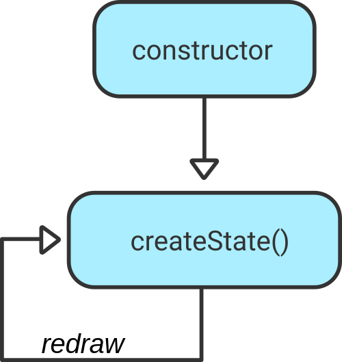
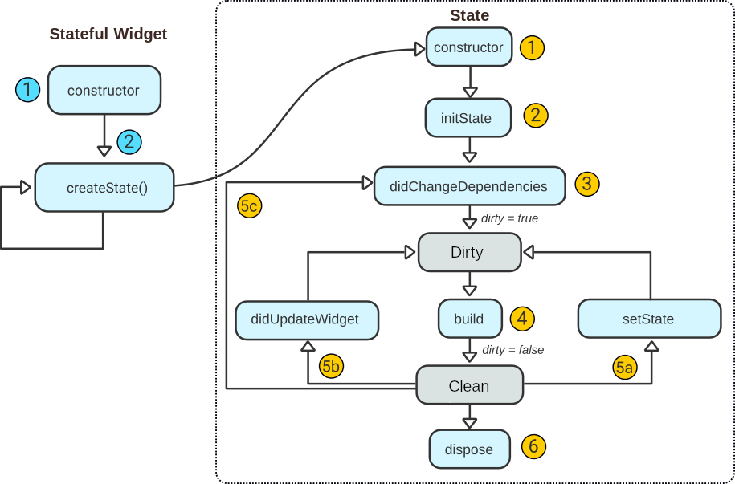
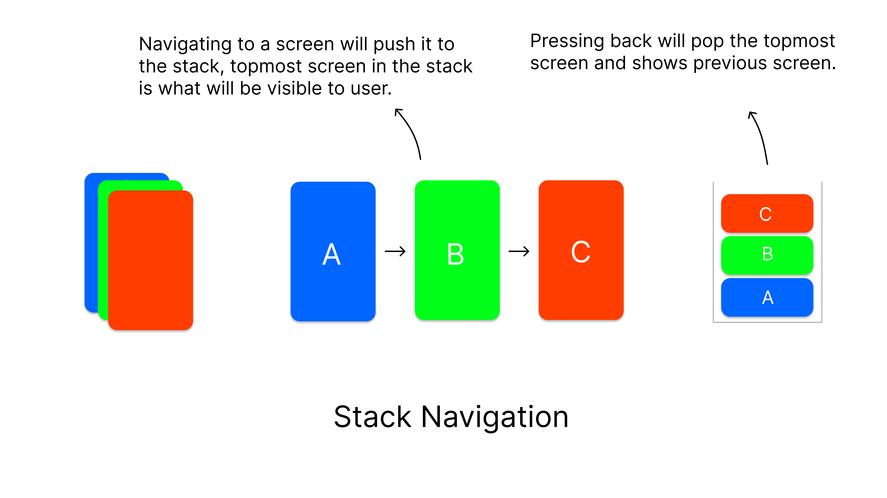
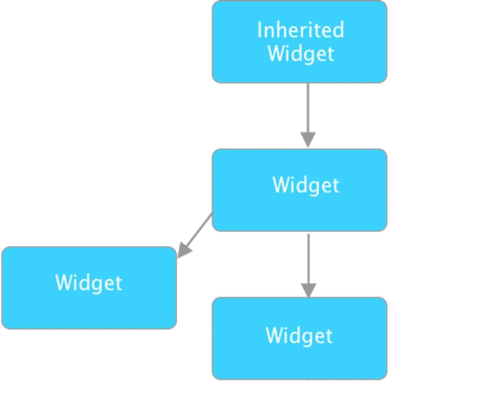

Unit 5.2. Flutter Architecture
In this section, we will explore the architecture of basic Flutter applications, including the Provider state management approach.
First of all, we need to review the difference between Stateless and Stateful widgets in Flutter.
Flutter widgets and state management
As you can remember from the previous section, there are 2 types of Flutter Widgets, Stateless and Stateful widgets.
Stateless Widgets
Stateless widgets are immutable, meaning that their properties cannot change - all values are final. A stateless widget is useful when the part of the user interface you are describing does not depend on anything other than the configuration information in the object itself and the BuildContext in which the widget is inflated.
Let's recall the structure of a stateless widget:
1 2 3 4 5 6 7 8 | |
As the most notable points, we see that it is a class that descends from the StatelessWidget class, has a constructor, and overrides the build method, which defines the appearance of the widget.
The lifecycle of this type of widget can be represented as follows:
The widget's lifecycle begins with its constructor, to which arguments can be provided. Once created, and when it is inserted into the widget tree, the build() method, inherited from StatelessWidget, is invoked, and we will override it to establish its design.
Once created, it is not destroyed, but is redrawn by invoking the build() method again whenever necessary, generally when a parent node in the widget tree needs to be redrawn.
Stateful Widgets
The structure of a stateful widget is as follows:
1 2 3 4 5 6 7 8 9 10 11 12 13 | |
We see that it is a Stateful widget because it descends from the StatefulWidget class, which indicates that it contains a mutable state. The constructor, like stateless widgets, in order to be referenced within the widget tree, will also have a key property.
This class overrides the createState() method of the StatefulWidget class. This method is invoked by the framework when the widget is inserted into the widget tree for the first time, creating an instance of the state _myWidgetState. With this, every time the widget is redrawn, the framework will reuse this instance so that the state is not lost.
We could therefore represent the lifecycle of a stateful widget very similarly to a stateless widget:

The state of the widget, on the other hand, is defined as a class descending from State, and it is here where we override the build method to construct the widget.
This state, as we have commented, is mutable, and therefore has a more complex lifecycle. Let's look at this lifecycle and its relationship with the lifecycle of the widget it is associated with:

Let's contrast both lifecycles:
Lifecycle of the Stateful Widget
- The lifecycle of the stateful widget begins by invoking its constructor.
- The
createStatemethod is invoked to create the associated state, so the state now begins its own lifecycle.
Lifecycle of the State
- The lifecycle of the state begins with the invocation of its constructor via the
createStatemethod of the associated widget. Since the widget is not yet in the tree, we should not perform initializations here that depend on the context (Remember that the build context is determined by the widget's position in the tree). - The
initStatemethod is launched, where operations for initializing data are generally carried out, or this data is obtained from external sources, such as a database or the network. When we override this method, we must invoke the constructor of its superclass, so that it performs initialization tasks. This method will be executed only once. - The
didChangeDependenciesmethod is invoked once, immediately afterinitState. This method will be launched again only when some initialization involving a widget of typeInheritedWidgetneeds to be done. At this point, Flutter marks this widget with the flagdirty=true, to indicate that it needs to be rebuilt. - If a rebuild of the widget is needed (
dirty=true), thebuild()method is invoked to determine the widgets that our widget will have to render. After this, the state is marked as clean, withdirty=false.
At this point, we already have the widget inserted into the tree and rendered according to its state, so the widget is considered clean. From this moment on, several things can happen that set this flag back to dirty and imply a rebuild of it:
- 5a. If an event occurs (like a button tap) that modifies the state, the
setState()method is invoked, which marks the state asdirty=trueagain, so that it is rebuilt in thebuildmethod, providing it with the updated state. - 5b. If a parent widget requests that its descendants be rebuilt and this involves the widget in question, the
didUpdateWidgetmethod is invoked, providing it with the previous widget as an argument and marking the state as dirty, so that it is rebuilt again. - 5c. If the widget depends on an
InheritedWidgetand this inherited widget changes, thedidChangeDependenciesmethod is invoked, also rebuilding the widget. Inherited widgets are a third type of widget that allows a descendant widget to directly access its state, without needing to go up the widget tree to reach it. - 6. If the widget will no longer be used,
dispose()is invoked to destroy it. In this method, animations should be stopped, connections closed, etc.
Navigation
Flutter provides a complete system for navigating between screens and handling deep links. Small applications without complex deep linking can use Navigator, while apps with specific deep linking and navigation requirements should also use the Router to correctly handle deep links on Android and iOS, and to stay in sync with the address bar when the app is running on the web.
Deep Links
Deep links are links that not only open an app, but also take the user to a specific location "deep" inside the app. For example, a deep link could take the user directly to a specific product page in a shopping app, rather than just opening the app's home screen.
Simple Navigation
Navigation between different screens in a Flutter application is typically managed using the Navigator class, which maintains a stack of routes (screens).
Terminology
In Flutter, screens and pages are called routes.

The Navigator widget displays screens as a stack using the correct transition animations for the target platform. To navigate to a new screen, access the Navigator through the route's BuildContext and call imperative methods such as push() or pop():
1 2 3 4 5 6 7 8 9 | |
The Navigator class also provides methods for more complex navigation scenarios, such as replacing the current route, removing routes from the stack, and more:
pop(): Removes the top route from the stack, returning to the previous screen.pushReplacement(): Replaces the current route with a new one.popUntil(): Pops routes until a specified condition is met.pushAndRemoveUntil(): Pushes a new route and removes routes until a specified condition is met.pushReplacement(): Replaces the current route on the top of the stack with a new one.replace(): Replaces a route on the stack with a new one.replaceRouteBelow(): Replaces a route below another route in the stack.
Some examples:
1 2 3 4 5 6 7 8 9 10 11 12 13 14 15 16 17 18 19 20 21 | |
In the next example, we can see a simple Flutter application with two screens and navigation between them using the Navigator class:
1 2 3 4 5 6 7 8 9 10 11 12 13 14 15 16 17 18 19 20 21 22 23 24 25 26 27 28 29 30 31 32 33 34 35 36 37 38 39 40 41 42 43 44 45 46 47 48 49 50 51 52 53 54 55 56 57 58 | |
To navigate from the first route to the second route, we can use the Navigator.push method in the onPressed callback of the button in the FirstRoute class:
1 2 3 4 5 6 7 8 9 | |
To return to the first route from the second route, we can use the Navigator.pop method in the onPressed callback of the button in the SecondRoute class:
1 2 3 4 | |
Design patterns
Flutter applications can be structured using various design patterns to manage complexity and improve maintainability. Some common design patterns used in Flutter development include:
- Provider Pattern: This pattern uses the
providerpackage to manage state and dependencies in a Flutter application. It allows widgets to access shared data and services without tight coupling. - BLoC (Business Logic Component) Pattern: This pattern separates business logic from the UI by using streams to manage state. It promotes a reactive programming model and helps in creating testable and maintainable code.
More info about the BLoC pattern can be found here.

- MVVM (Model-View-ViewModel) Pattern: This pattern separates the UI (View) from the business logic (ViewModel) and data (Model). It allows for better separation of concerns and easier testing.
You can see an example of the MVVM pattern applied to Flutter here.
The Provider Pattern
The Provider Pattern is a widely used design pattern in Flutter for state management and dependency injection. It leverages the provider package to make data and services available to widgets throughout the widget tree without tight coupling.
Info
Provider is based on the InheritedWidget mechanism, which allows data to be efficiently propagated down the widget tree. It simplifies the process of sharing state and dependencies between widgets, making it easier to manage complex applications.

The key concepts of the Provider Pattern include:
- Providers: These are classes that extend
ChangeNotifieror other provider types (likeFutureProvider,StreamProvider, etc.) to hold and manage state or services. They notify listeners when the state changes. - Consumers: Widgets that listen to changes in the provider and rebuild themselves when the provider notifies them of changes. The
Consumerwidget or theProvider.of<T>(context)method can be used to access the provider's data. - ChangeNotifierProvider: A specific type of provider that listens to a
ChangeNotifierand rebuilds dependent widgets when notified of changes. - MultiProvider: A widget that allows multiple providers to be created and made available to the widget tree.

Here's a simple example of using the Provider Pattern in a Flutter application. First of all, add the provider package to your pubspec.yaml file:
1 2 3 4 | |
Next, create a simple model class that extends ChangeNotifier to manage the state:
1 2 3 4 5 6 7 8 9 10 11 12 | |
Now, set up the provider in your main application file:
1 2 3 4 5 6 7 8 9 10 11 12 13 14 15 16 17 18 19 20 21 22 | |
Finally, create a screen that consumes the provider and displays the counter value:
1 2 3 4 5 6 7 8 9 10 11 12 13 14 15 16 17 18 19 20 21 22 23 24 25 26 27 28 | |
In this example, we created a simple counter application using the Provider Pattern. The CounterModel class manages the counter state and notifies listeners when the count changes. The ChangeNotifierProvider makes the CounterModel available to the widget tree, and the Consumer widget listens for changes and rebuilds the UI accordingly.
Instead of Consumer, we could also use Provider.of<CounterModel>(context) directly in the build method to access the counter value, but using Consumer is often more efficient as it only rebuilds the specific part of the widget tree that depends on the provider.
The same example with Provider.of would look like this:
1 2 3 4 5 6 7 8 9 10 11 12 13 14 15 16 17 18 19 20 21 | |
The diagram below illustrates the relationship between the main components of the Provider Pattern in this example:
graph TD
A[<b>MyApp</b> \n <i>ChangeNotifierProvider</i>] --> B[<b>CounterScreen</b> \n <i>Consumer</i>]
B --> C([<b>CounterModel</b> \n <i>ChangeNotifier</i>])
C -.-> AIn case we need to manage multiple providers, we can use the MultiProvider widget to simplify the setup:
1 2 3 4 5 6 7 8 9 | |
This way, we can easily manage multiple providers in our Flutter application using the Provider Pattern.